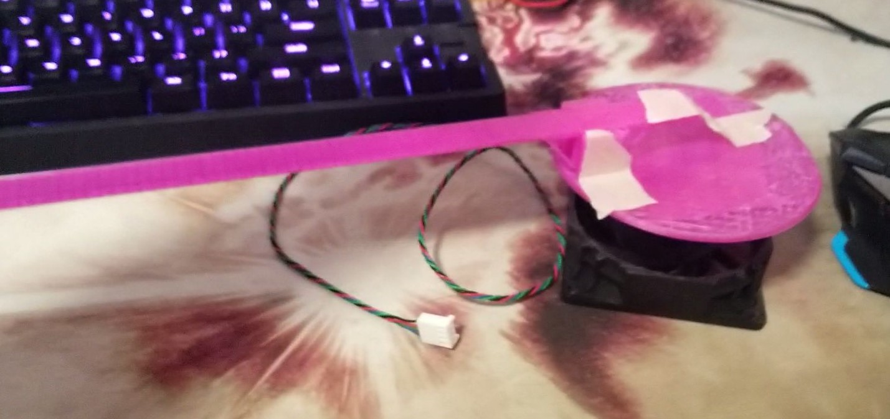
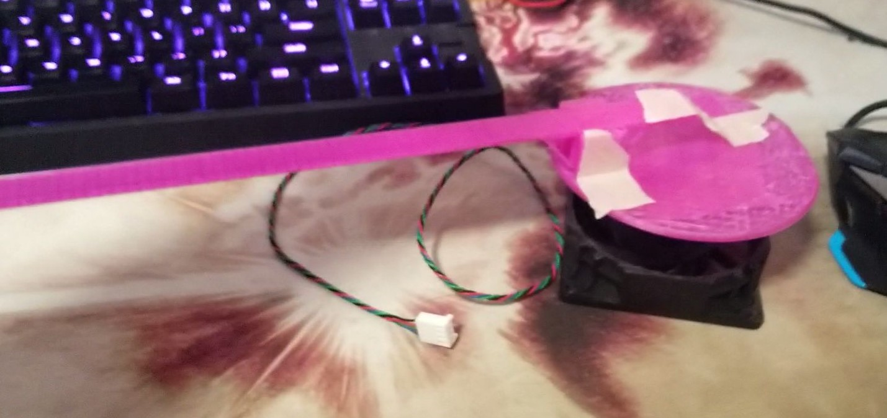

High Level Design
1. Rationale and sources of the project idea
Zesun had seen a POV project demo in her Arduino class when she was a sophomore and was amazed by POV displays. She wanted to build something relates to POV for the project. We did research on the internet, and interestingly, most of these POV projects are either making a digital clock or only displaying a static image. We wanted a cooler POV project than just a clock or a graph. When we were searching for parts, suddenly the internet connection was gone and chrome jumped to its no-internet-connection dinosaur game. We were inspired by it and we decided we were going to make a POV version of the dinosaur game.
2. Background math
Phase lock was used to lock our game objects at a particular position on the POV display. Unlike a static TFT LCD display in which the pixels were set and not moving, we used a single DotStar LED strip which we rotated very quickly around an axis to make use of the persistence of vision effect and created a sort of ‘fake’ display. When capturing with a camera, it was can be very easy to make out the individual parts of the blade as the shutter speed is too fast, but to the human eye, the lit up pixels seem persist in our vision allowing us to piece together a full image. As the pixels on the DotStar were constantly moving,we needed to determine when to turn on specific LEDs to display our game. To achieve phase locking, we first calculated the RPM of our fan on its lowest speed. We used an IR LED and IR sensor to find how fast the fan rotated. We had a 32-bit timer (timer23) that every time the IR LED made a pass to the sensor, we determined the amount of cycles between each revolution and then reinitialized the timer to 0. The average readout value was determined how fast the fan was rotating. The RPM was calculated using the following formula: Period = timer23 value / 40 MHz [s] RPM = (60s/1min) * 1/(period) 40 Mhz was our CPU clock frequency; the readout value divided by 40Mhz gave how many seconds the fan took to go through one revolution. There are 60s in a minute. Mulitplying that by the frequency returns the amount of revolutions per minute for our fan. At the lowest speed, the readout we got was around 4528302, and that roughly corresponds to 530 RPM. After knowing the RPM at speed 1, and the max readout timer23 could have, we could perform phase lock by updating the DotStar at the right time. We knew timer23 reads about 4528302 for one revolution, if we wanted to update the DotStar 100 times per revolution, then the timer would read 4528302/100 = 45283 for one update. While we definitely had the processing power to update even faster every revolution, we determined that 100 updates provided us with enough resolution to display our game.

Figure 1. Example Fan with 100 updates/rev
The red arrow indicates the position that matches 0th update, the 1st update is the next vertical line and etc. This covers the math for our phase lock.
3.Logical structure
We had a thread responsible for game object calculation such as dinosaur jump, landing and whether it hits the fireball, and the same thread generates fireballs. More details of the game is covered in the software design section. We used two ISRs to control the timing of the game as well as the game console update. By separating the game object logic and the game object drawing, it was very easy for us to add and remove any part of the game as there were no heavy dependencies in the game.
4.Hardware/software tradeoffs
Although the fan had 3 levels of speed with level 1 being the slowest with 530RPM, it was hard to find a slip ring that met our budget limit that could perform more than 300RPM. We were overloading our $7 slip ring even using the slowest rotation speed of the fan.
Another compromise we had to make was our game object sizes and resolution. We had a 64-dotstar-LED strip with the middle of the strip being the center of the game. That left us with 32 DotStars to draw the game objects. In that 32x32 space (approximately), we needed to draw the jumping dinosaur as well as the fireballs, we had to trade our object resolutions with the number of DotStars we had.
5.Standards and patents
This project or any component we used was not restricted by IEEE, ISO, ANSI, DIN standards either due to safety concerns or interference with others. We did not find any existing patent that uses the same idea of ours. Our project is original work with the exception of the i2cHelper header file from a previous 4670 project. We were inspired by the fan-tastic POV project 2016 to use a box fan because we didn’t have luck with a 12V DC brushless motor. We were also inspired by Google’s dinosaur game, but the game characters and the game logic were completely designed by us.


 
